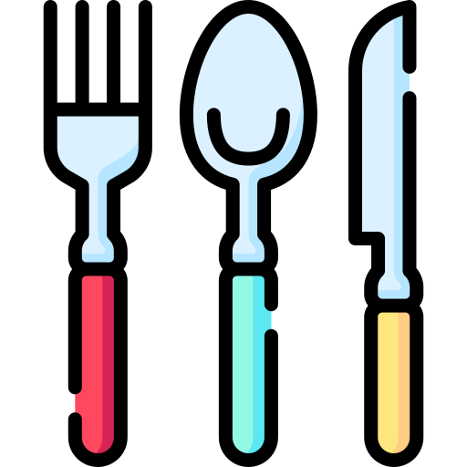

 <mat-toolbar color="primary" class="toolbar-custom">
    
    <div *ngIf="userIsAuthenticated">
    <a mat-button routerLink="/create" routerLinkActive="mat-accent">New Recipe</a>
    <a mat-button routerLink="/recipe-list" routerLinkActive="mat-accent">Recipe List</a>
  </div>
    <div *ngIf="!userIsAuthenticated">
    <a mat-button routerLink="/login" routerLinkActive="mat-accent">Login</a>
    <a mat-button routerLink="/signup" routerLinkActive="mat-accent">Signup</a>
  </div>
    <div *ngIf="userIsAuthenticated" class="logout-custom" >
    <a mat-button (click)= "onLogout()">Logout</a>
  </div>
</mat-toolbar>
